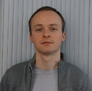

|
|
| Physical address | Centre de recherche Inria Lille Nord Europe, RMoD team |  |
| 40, avenue Halley |
| 59650 Villeneuve d'Ascq |
| France |
| Phone | (+33) (0)3 59 35 87 38 |
| Office | B302 |
| Courriel | xy.z@inria.fr ou x-y.z@univ-lille1.fr |
| avec x → jean, y → christophe et z → bach |
| Clef publique | EA19F34E / Fingerprint=A8C3 C208 1C6A 209B DE2A 2D6C 520E 0E85 EA19 F34E |
| (ancienne) | 5F96B01C / Fingerprint=6B01 787A A62D D8FF 7CAA 8601 838F E373 5F96 B01C |
| Jabber (IM) | jc.bach@im.apinc.org |
| Tox ID | BCD619585BDFB2426EFEB9622E7C4C7FF2D78459AF4CE2D18864B8B392F07C6A82117456EA95 |
Présentation
Depuis septembre 2014, je suis ATER au FIL, le département informatique de l'UFR
IEEA de l'Université de Lille 1. Je fais
partie de l'équipe RMod (Inria, LIFL),
dirigée par Stéphane Ducasse.
Ce contrat se terminant en août 2015, n'hésitez pas à me contacter si
vous avez des projets ou offres d'emploi en lien avec mes centres d'intérêts
scientifiques et techniques.
J'ai soutenu ma thèse Le 12 septembre 2014, j'ai soutenu ma thèse commencée en
novembre 2010. J'étais doctorant au LORIA
travaillant sur la transformation de modèles sous la supervision de Pierre-Étienne Moreau et Marc Pantel, dans l'équipe Pareo.
Dans le cadre de ma thèse, j'étais impliqué dans le projet Quarteft, financé par la FNRAE (Fondation de Recherche pour
l'Aéronautique et l'Espace).
De novembre 2010 à octobre 2013, j'étais financé par l'Inria. De novembre 2013 à août 2014, j'étais
ATER dans le département informatique de la
FST de
l'Université de Lorraine.
Diplômé de l'ESIAL
-spécialisation Ingénierie du Logiciel- (actuellement TELECOM Nancy), j'ai travaillé
pendant un peu plus de deux ans en tant qu'ingénieur sécurité chez Advens, une société de service et conseil
en sécurité des systèmes d'information.
J'ai ensuite travaillé deux ans sur le compilateur Tom en tant qu'ingénieur dans
l'équipe Pareo.
Recherche, publications et exposés :
- Vous pouvez trouver des informations concernant mes thèmes de recherche, mes publications et mes exposés sur cette page.
- Sur DBLP
Enseignement :
En parallèle de ma thèse j'ai enseigné à l'École des Mines de Nancy en tant que
moniteur (2010-2013), puis en tant qu'ATER (2013-2014) au sein département informatique de la
Faculté
des Sciences et Technologies. Je suis actuellement ATER au FIL, le département
informatique de l'UFR IEEA de Lille 1.
Pour plus de détails, vous pouvez vous
référer à la page suivante.
Quelques détails d'activités hors recherche et enseignement sont disponibles sur la page suivante.
Remerciement spécial à Clément Hurlin et Paul Brauner qui m'ont autorisé à
reprendre leurs css et le design de leurs pages :)
|
EN
|
Dernière modification : 2014-12-17
|
|
|